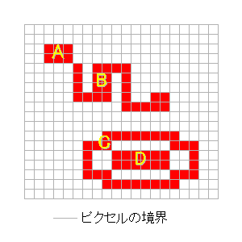
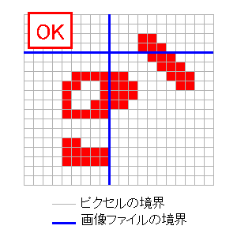
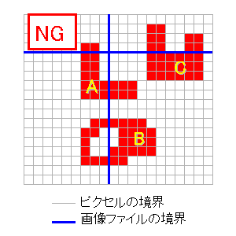

各マシンのローカルディスクに分散する画像ファイルに含まれる「物体」の総数を 求めよ。
各画像ファイルは巨大な矩形の二値画像(以下、元画像)の一部である。 全ての画像ファイルは一つの正方形領域を表し、一辺の長さは 全てのファイルで等しく、20,000以下である。 画像ファイル群はメッシュ上に並んでいる。つまり、各画像ファイルの 一辺に隣接する画像ファイルは高々一つである。 隣接した画像ファイルは元画像のピクセルを共有しない。 画像の各ピクセルの色は'0'または'1'であり、一つ の物体は'1'のピクセルが連続した部分と定義される。ここで、 '1'のピクセルが連続しているとは、縦または横方 向に'1'のピクセルが並んでいる場合をいう。
各問題には初級または上級の難易度が設定されている。 各問題の難易度は公開される。両難易度 を解答する場合に、同一プログラムを作成しても、別プログラムを作成しても 良い。
|  |
一つの物体は単一の画像ファイル内に納まるか、または多くとも二つの隣 接した画像ファイルにまたがる。 物体が二つの画像ファイルにまたがる場合には、プログラムは正しくそれを1 個と数えなければならない。
そのような、ファイルにまたがる物体の形状は、 以下のような条件を満たしていることが保証される。物体のファイル境界によ る「切れ目」は必ず一つの連続した線分となっている。たとえば、ドーナツ型 の物体の真中をファイル境界が切断することは無い。より詳細には、以下のよ うになる。一つの物体が、画像ファイルFAと、元画像上でその右に位置する画 像ファイルFBにまたがるとする。このとき、FAの右端のピクセルの集合と物体 を表すピクセル集合の共通集合は、連結である。FBの左端のピクセルの集合と 物体を表すピクセル集合の共通集合もまた、連結である。一つの物体が上下に 隣接したファイルにまたがる場合も同様とする。
|  |
|  |
各画像ファイルには、マスターとレプリカの2種類がある。それぞれの分割画 像に対し、マスターファイルは全マシンを通して一つのみ存在する。また、 各画像のレプリカの数は0個以上100個以下である。 それぞれの分割画像の、マスターファ イルと全てのレプリカファイルは同一の内容である。
プログラムはマスターファイルのみを用いて総数を求めることが可能である。一 方、レプリカファイルも用いることにより、より効率的に問題を解けるかもしれ ない。その場合、物体をだぶって数えないよう注意が必要である。
ただし、PPは問題番号(2桁)、XXXはファイルのX位置(3桁)、 YYYはファイルのY位置(3桁)である。 X位置は、一番左を0番目として、そのファイルが左から何番目かを表す。 Y位置は、一番上を0番目として、そのファイルが上から何番目かを表す。 本説明では省かれているが、出題APIから得られるファイル名は、前にディレ クトリ名のついたフルパス名である。PP, XXX, YYYとも左にゼロ詰めがされている。
例: 01012008.mdt は問題番号1の、左から12番目、上から8番目の画像のマス ターファイルである。
画像ファイルは簡易暗号化されており、出題APIから得られる復号化鍵によって復号 する必要がある。画像ファイル中の各byteと復号化鍵中の各byteを順にXOR演算する ことにより復号が行なわれる。復号化鍵のbyte列はcyclicに用いられる。
つまり、以下のようになる。暗号化画像ファイルのbyte列をC、復号後のbyte 列をPとする。復号化鍵のbyte列をKとし、その長さがL bytesであるとすると、 P[i] = C[i]^K[i % L]となる。(ただし、^はXOR演算、%は剰余演算とする)
復号化された画像ファイルにはrun-length方式で圧縮された二値画像データが 格納されている。画像ファイルは、4bytesのヘッダ部とそれに続くデータ部か らなる。
ヘッダ部は以下のような構造である。
| 0--1byte | 画像の幅(ピクセル) |
| 2--3byte | 画像の高さ(ピクセル) |
幅と高さはそれぞれ16bitsの整数で表されている。 バイトオーダーはリトルエンディアン (Pentiumのバイトオーダー)である。 本課題においてはそれぞれの画像ファイルは正方形であるため、幅と高さは 同じ値である。
データ部は、1byteまたは2bytesで表される`run'の列である。runとは同じ色 が連続して現われる部分である。画像上のデータは左上から右へ向かう順で格 納され、ラインの右端の次にはその下のラインの左端が格納される。一つの runが複数のラインにまたがることがある。
Runは以下のような構造である。なお、1byte runと2bytes runは最上位ビット により区別される。 以下の表において、bit7は最上位ビット(MSB)、bit0は最下位ビット(LSB) を表す。
| bit7 | '0' |
| bit6 | data |
| bit5--0 | lenm1 |
| bit7 | '1' |
| bit6 | data |
| bit5--0 | lenm1H |
| bit7--0 | lenm1L |